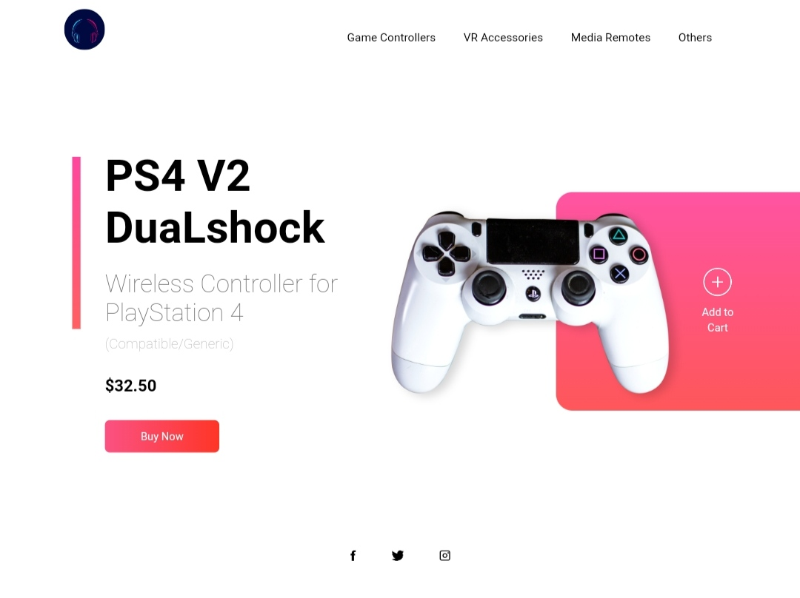
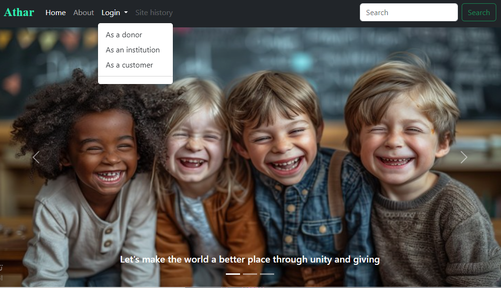
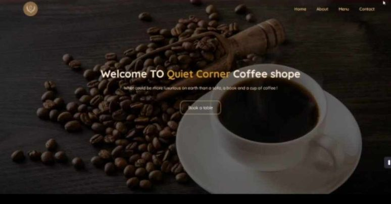

Hello, I am Alaa Mousa, a 19-year-old Palestinian living in the city of Tulkarm. I study Computer Systems Engineering at Palestine Technical University - Kadoorie.
I am a front-end developer with a passion for this field. In addition, I have experience in problem-solving and have delved into learning programming languages and solving problems.
Home page to display and sell PlayStation controllers.
Website focuses on providing essential needs for life in disaster-stricken countries suffering from severe famine, poverty in resources, and lack of medicines.
Quite Corner, This project is a coffee shop website through which the user can see the dishes and drinks that are served, learn about the history of the café, and send notes and reservations. was used html in building the site structure Css to add aesthetics to the site and colors to create a smooth experience.
